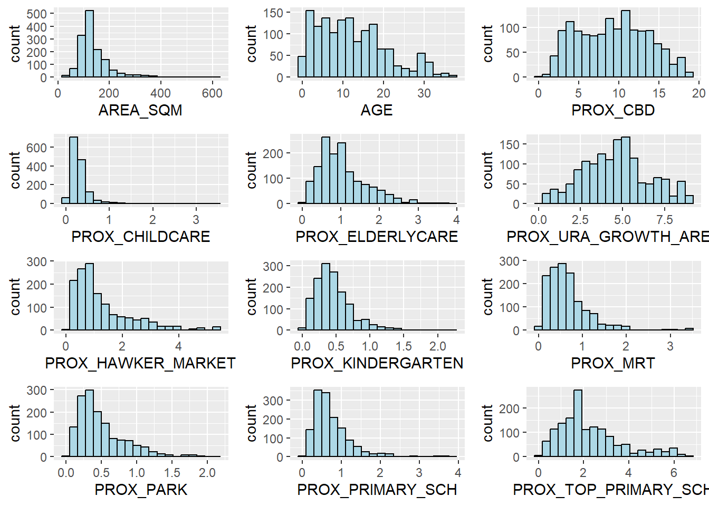
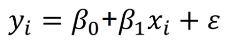
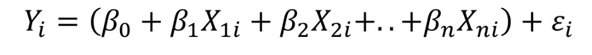

Show the code
# do not load corrplot onto our memory using pacman
pacman::p_load(olsrr, ggupubr, sf, spdep, GWmodel, tmap, tidyverse, gtsummary)March 6, 2023
March 12, 2023
Reading layer `MP14_SUBZONE_WEB_PL' from data source
`C:\guga-nesh\IS415-GAA\in-class_ex\in-class_ex08\data\geospatial'
using driver `ESRI Shapefile'
Simple feature collection with 323 features and 15 fields
Geometry type: MULTIPOLYGON
Dimension: XY
Bounding box: xmin: 2667.538 ymin: 15748.72 xmax: 56396.44 ymax: 50256.33
Projected CRS: SVY21Rows: 1,436
Columns: 23
$ LATITUDE <dbl> 1.287145, 1.328698, 1.313727, 1.308563, 1.321437,…
$ LONGITUDE <dbl> 103.7802, 103.8123, 103.7971, 103.8247, 103.9505,…
$ POSTCODE <dbl> 118635, 288420, 267833, 258380, 467169, 466472, 3…
$ SELLING_PRICE <dbl> 3000000, 3880000, 3325000, 4250000, 1400000, 1320…
$ AREA_SQM <dbl> 309, 290, 248, 127, 145, 139, 218, 141, 165, 168,…
$ AGE <dbl> 30, 32, 33, 7, 28, 22, 24, 24, 27, 31, 17, 22, 6,…
$ PROX_CBD <dbl> 7.941259, 6.609797, 6.898000, 4.038861, 11.783402…
$ PROX_CHILDCARE <dbl> 0.16597932, 0.28027246, 0.42922669, 0.39473543, 0…
$ PROX_ELDERLYCARE <dbl> 2.5198118, 1.9333338, 0.5021395, 1.9910316, 1.121…
$ PROX_URA_GROWTH_AREA <dbl> 6.618741, 7.505109, 6.463887, 4.906512, 6.410632,…
$ PROX_HAWKER_MARKET <dbl> 1.76542207, 0.54507614, 0.37789301, 1.68259969, 0…
$ PROX_KINDERGARTEN <dbl> 0.05835552, 0.61592412, 0.14120309, 0.38200076, 0…
$ PROX_MRT <dbl> 0.5607188, 0.6584461, 0.3053433, 0.6910183, 0.528…
$ PROX_PARK <dbl> 1.1710446, 0.1992269, 0.2779886, 0.9832843, 0.116…
$ PROX_PRIMARY_SCH <dbl> 1.6340256, 0.9747834, 1.4715016, 1.4546324, 0.709…
$ PROX_TOP_PRIMARY_SCH <dbl> 3.3273195, 0.9747834, 1.4715016, 2.3006394, 0.709…
$ PROX_SHOPPING_MALL <dbl> 2.2102717, 2.9374279, 1.2256850, 0.3525671, 1.307…
$ PROX_SUPERMARKET <dbl> 0.9103958, 0.5900617, 0.4135583, 0.4162219, 0.581…
$ PROX_BUS_STOP <dbl> 0.10336166, 0.28673408, 0.28504777, 0.29872340, 0…
$ NO_Of_UNITS <dbl> 18, 20, 27, 30, 30, 31, 32, 32, 32, 32, 34, 34, 3…
$ FAMILY_FRIENDLY <dbl> 0, 0, 0, 0, 0, 1, 1, 0, 1, 1, 0, 0, 0, 0, 0, 0, 0…
$ FREEHOLD <dbl> 1, 1, 1, 1, 1, 1, 1, 1, 1, 0, 1, 1, 1, 1, 1, 1, 1…
$ LEASEHOLD_99YR <dbl> 0, 0, 0, 0, 0, 0, 0, 0, 0, 0, 0, 0, 0, 0, 0, 0, 0… LATITUDE LONGITUDE POSTCODE SELLING_PRICE
Min. :1.240 Min. :103.7 Min. : 18965 Min. : 540000
1st Qu.:1.309 1st Qu.:103.8 1st Qu.:259849 1st Qu.: 1100000
Median :1.328 Median :103.8 Median :469298 Median : 1383222
Mean :1.334 Mean :103.8 Mean :440439 Mean : 1751211
3rd Qu.:1.357 3rd Qu.:103.9 3rd Qu.:589486 3rd Qu.: 1950000
Max. :1.454 Max. :104.0 Max. :828833 Max. :18000000
AREA_SQM AGE PROX_CBD PROX_CHILDCARE
Min. : 34.0 Min. : 0.00 Min. : 0.3869 Min. :0.004927
1st Qu.:103.0 1st Qu.: 5.00 1st Qu.: 5.5574 1st Qu.:0.174481
Median :121.0 Median :11.00 Median : 9.3567 Median :0.258135
Mean :136.5 Mean :12.14 Mean : 9.3254 Mean :0.326313
3rd Qu.:156.0 3rd Qu.:18.00 3rd Qu.:12.6661 3rd Qu.:0.368293
Max. :619.0 Max. :37.00 Max. :19.1804 Max. :3.465726
PROX_ELDERLYCARE PROX_URA_GROWTH_AREA PROX_HAWKER_MARKET PROX_KINDERGARTEN
Min. :0.05451 Min. :0.2145 Min. :0.05182 Min. :0.004927
1st Qu.:0.61254 1st Qu.:3.1643 1st Qu.:0.55245 1st Qu.:0.276345
Median :0.94179 Median :4.6186 Median :0.90842 Median :0.413385
Mean :1.05351 Mean :4.5981 Mean :1.27987 Mean :0.458903
3rd Qu.:1.35122 3rd Qu.:5.7550 3rd Qu.:1.68578 3rd Qu.:0.578474
Max. :3.94916 Max. :9.1554 Max. :5.37435 Max. :2.229045
PROX_MRT PROX_PARK PROX_PRIMARY_SCH PROX_TOP_PRIMARY_SCH
Min. :0.05278 Min. :0.02906 Min. :0.07711 Min. :0.07711
1st Qu.:0.34646 1st Qu.:0.26211 1st Qu.:0.44024 1st Qu.:1.34451
Median :0.57430 Median :0.39926 Median :0.63505 Median :1.88213
Mean :0.67316 Mean :0.49802 Mean :0.75471 Mean :2.27347
3rd Qu.:0.84844 3rd Qu.:0.65592 3rd Qu.:0.95104 3rd Qu.:2.90954
Max. :3.48037 Max. :2.16105 Max. :3.92899 Max. :6.74819
PROX_SHOPPING_MALL PROX_SUPERMARKET PROX_BUS_STOP NO_Of_UNITS
Min. :0.0000 Min. :0.0000 Min. :0.001595 Min. : 18.0
1st Qu.:0.5258 1st Qu.:0.3695 1st Qu.:0.098356 1st Qu.: 188.8
Median :0.9357 Median :0.5687 Median :0.151710 Median : 360.0
Mean :1.0455 Mean :0.6141 Mean :0.193974 Mean : 409.2
3rd Qu.:1.3994 3rd Qu.:0.7862 3rd Qu.:0.220466 3rd Qu.: 590.0
Max. :3.4774 Max. :2.2441 Max. :2.476639 Max. :1703.0
FAMILY_FRIENDLY FREEHOLD LEASEHOLD_99YR
Min. :0.0000 Min. :0.0000 Min. :0.0000
1st Qu.:0.0000 1st Qu.:0.0000 1st Qu.:0.0000
Median :0.0000 Median :0.0000 Median :0.0000
Mean :0.4868 Mean :0.4227 Mean :0.4882
3rd Qu.:1.0000 3rd Qu.:1.0000 3rd Qu.:1.0000
Max. :1.0000 Max. :1.0000 Max. :1.0000 # visualise variables to understand distribution, see outliers, whether categorical or not, etc.
AREA_SQM <- ggplot(data=condo_resale.sf, aes(x= `AREA_SQM`)) +
geom_histogram(bins=20, color="black", fill="light blue")
AGE <- ggplot(data=condo_resale.sf, aes(x= `AGE`)) +
geom_histogram(bins=20, color="black", fill="light blue")
PROX_CBD <- ggplot(data=condo_resale.sf, aes(x= `PROX_CBD`)) +
geom_histogram(bins=20, color="black", fill="light blue")
PROX_CHILDCARE <- ggplot(data=condo_resale.sf, aes(x= `PROX_CHILDCARE`)) +
geom_histogram(bins=20, color="black", fill="light blue")
PROX_ELDERLYCARE <- ggplot(data=condo_resale.sf, aes(x= `PROX_ELDERLYCARE`)) +
geom_histogram(bins=20, color="black", fill="light blue")
PROX_URA_GROWTH_AREA <- ggplot(data=condo_resale.sf,
aes(x= `PROX_URA_GROWTH_AREA`)) +
geom_histogram(bins=20, color="black", fill="light blue")
PROX_HAWKER_MARKET <- ggplot(data=condo_resale.sf, aes(x= `PROX_HAWKER_MARKET`)) +
geom_histogram(bins=20, color="black", fill="light blue")
PROX_KINDERGARTEN <- ggplot(data=condo_resale.sf, aes(x= `PROX_KINDERGARTEN`)) +
geom_histogram(bins=20, color="black", fill="light blue")
PROX_MRT <- ggplot(data=condo_resale.sf, aes(x= `PROX_MRT`)) +
geom_histogram(bins=20, color="black", fill="light blue")
PROX_PARK <- ggplot(data=condo_resale.sf, aes(x= `PROX_PARK`)) +
geom_histogram(bins=20, color="black", fill="light blue")
PROX_PRIMARY_SCH <- ggplot(data=condo_resale.sf, aes(x= `PROX_PRIMARY_SCH`)) +
geom_histogram(bins=20, color="black", fill="light blue")
PROX_TOP_PRIMARY_SCH <- ggplot(data=condo_resale.sf,
aes(x= `PROX_TOP_PRIMARY_SCH`)) +
geom_histogram(bins=20, color="black", fill="light blue")
ggpubr::ggarrange(AREA_SQM, AGE, PROX_CBD, PROX_CHILDCARE, PROX_ELDERLYCARE,
PROX_URA_GROWTH_AREA, PROX_HAWKER_MARKET, PROX_KINDERGARTEN, PROX_MRT,
PROX_PARK, PROX_PRIMARY_SCH, PROX_TOP_PRIMARY_SCH,
ncol = 3, nrow = 4)
# using lm() to calibrate MLR model
# save the entire model into an lm object -> you can get your residuals, intercepts, etc. all from here.
condo.mlr <- lm(formula = SELLING_PRICE ~ AREA_SQM + AGE +
PROX_CBD + PROX_CHILDCARE + PROX_ELDERLYCARE +
PROX_URA_GROWTH_AREA + PROX_HAWKER_MARKET + PROX_KINDERGARTEN +
PROX_MRT + PROX_PARK + PROX_PRIMARY_SCH +
PROX_TOP_PRIMARY_SCH + PROX_SHOPPING_MALL + PROX_SUPERMARKET +
PROX_BUS_STOP + NO_Of_UNITS + FAMILY_FRIENDLY + FREEHOLD,
data=condo_resale.sf)
summary(condo.mlr)
Call:
lm(formula = SELLING_PRICE ~ AREA_SQM + AGE + PROX_CBD + PROX_CHILDCARE +
PROX_ELDERLYCARE + PROX_URA_GROWTH_AREA + PROX_HAWKER_MARKET +
PROX_KINDERGARTEN + PROX_MRT + PROX_PARK + PROX_PRIMARY_SCH +
PROX_TOP_PRIMARY_SCH + PROX_SHOPPING_MALL + PROX_SUPERMARKET +
PROX_BUS_STOP + NO_Of_UNITS + FAMILY_FRIENDLY + FREEHOLD,
data = condo_resale.sf)
Residuals:
Min 1Q Median 3Q Max
-3475964 -293923 -23069 241043 12260381
Coefficients:
Estimate Std. Error t value Pr(>|t|)
(Intercept) 481728.40 121441.01 3.967 7.65e-05 ***
AREA_SQM 12708.32 369.59 34.385 < 2e-16 ***
AGE -24440.82 2763.16 -8.845 < 2e-16 ***
PROX_CBD -78669.78 6768.97 -11.622 < 2e-16 ***
PROX_CHILDCARE -351617.91 109467.25 -3.212 0.00135 **
PROX_ELDERLYCARE 171029.42 42110.51 4.061 5.14e-05 ***
PROX_URA_GROWTH_AREA 38474.53 12523.57 3.072 0.00217 **
PROX_HAWKER_MARKET 23746.10 29299.76 0.810 0.41782
PROX_KINDERGARTEN 147468.99 82668.87 1.784 0.07466 .
PROX_MRT -314599.68 57947.44 -5.429 6.66e-08 ***
PROX_PARK 563280.50 66551.68 8.464 < 2e-16 ***
PROX_PRIMARY_SCH 180186.08 65237.95 2.762 0.00582 **
PROX_TOP_PRIMARY_SCH 2280.04 20410.43 0.112 0.91107
PROX_SHOPPING_MALL -206604.06 42840.60 -4.823 1.57e-06 ***
PROX_SUPERMARKET -44991.80 77082.64 -0.584 0.55953
PROX_BUS_STOP 683121.35 138353.28 4.938 8.85e-07 ***
NO_Of_UNITS -231.18 89.03 -2.597 0.00951 **
FAMILY_FRIENDLY 140340.77 47020.55 2.985 0.00289 **
FREEHOLD 359913.01 49220.22 7.312 4.38e-13 ***
---
Signif. codes: 0 '***' 0.001 '**' 0.01 '*' 0.05 '.' 0.1 ' ' 1
Residual standard error: 755800 on 1417 degrees of freedom
Multiple R-squared: 0.6518, Adjusted R-squared: 0.6474
F-statistic: 147.4 on 18 and 1417 DF, p-value: < 2.2e-16# look at Model Summary to see R, R^2
# can see goodness of fit test under ANOVA
condo.mlr1 <- lm(formula = SELLING_PRICE ~ AREA_SQM + AGE +
PROX_CBD + PROX_CHILDCARE + PROX_ELDERLYCARE +
PROX_URA_GROWTH_AREA + PROX_MRT + PROX_PARK +
PROX_PRIMARY_SCH + PROX_SHOPPING_MALL + PROX_BUS_STOP +
NO_Of_UNITS + FAMILY_FRIENDLY + FREEHOLD,
data=condo_resale.sf)
ols_regress(condo.mlr1) Model Summary
------------------------------------------------------------------------
R 0.807 RMSE 755957.289
R-Squared 0.651 Coef. Var 43.168
Adj. R-Squared 0.647 MSE 571471422208.591
Pred R-Squared 0.638 MAE 414819.628
------------------------------------------------------------------------
RMSE: Root Mean Square Error
MSE: Mean Square Error
MAE: Mean Absolute Error
ANOVA
--------------------------------------------------------------------------------
Sum of
Squares DF Mean Square F Sig.
--------------------------------------------------------------------------------
Regression 1.512586e+15 14 1.080418e+14 189.059 0.0000
Residual 8.120609e+14 1421 571471422208.591
Total 2.324647e+15 1435
--------------------------------------------------------------------------------
Parameter Estimates
-----------------------------------------------------------------------------------------------------------------
model Beta Std. Error Std. Beta t Sig lower upper
-----------------------------------------------------------------------------------------------------------------
(Intercept) 527633.222 108183.223 4.877 0.000 315417.244 739849.200
AREA_SQM 12777.523 367.479 0.584 34.771 0.000 12056.663 13498.382
AGE -24687.739 2754.845 -0.167 -8.962 0.000 -30091.739 -19283.740
PROX_CBD -77131.323 5763.125 -0.263 -13.384 0.000 -88436.469 -65826.176
PROX_CHILDCARE -318472.751 107959.512 -0.084 -2.950 0.003 -530249.889 -106695.613
PROX_ELDERLYCARE 185575.623 39901.864 0.090 4.651 0.000 107302.737 263848.510
PROX_URA_GROWTH_AREA 39163.254 11754.829 0.060 3.332 0.001 16104.571 62221.936
PROX_MRT -294745.107 56916.367 -0.112 -5.179 0.000 -406394.234 -183095.980
PROX_PARK 570504.807 65507.029 0.150 8.709 0.000 442003.938 699005.677
PROX_PRIMARY_SCH 159856.136 60234.599 0.062 2.654 0.008 41697.849 278014.424
PROX_SHOPPING_MALL -220947.251 36561.832 -0.115 -6.043 0.000 -292668.213 -149226.288
PROX_BUS_STOP 682482.221 134513.243 0.134 5.074 0.000 418616.359 946348.082
NO_Of_UNITS -245.480 87.947 -0.053 -2.791 0.005 -418.000 -72.961
FAMILY_FRIENDLY 146307.576 46893.021 0.057 3.120 0.002 54320.593 238294.560
FREEHOLD 350599.812 48506.485 0.136 7.228 0.000 255447.802 445751.821
-----------------------------------------------------------------------------------------------------------------gtsummary() method# a more nicer and tidy method - well formatted regression report
# things to look at for our project
# we can even append other report tables as shown below
tbl_regression(condo.mlr1,
intercept = TRUE) %>%
add_glance_source_note(
label = list(sigma ~ "\U03C3"),
include = c(r.squared, adj.r.squared,
AIC, statistic,
p.value, sigma))| Characteristic | Beta | 95% CI1 | p-value |
|---|---|---|---|
| (Intercept) | 527,633 | 315,417, 739,849 | <0.001 |
| AREA_SQM | 12,778 | 12,057, 13,498 | <0.001 |
| AGE | -24,688 | -30,092, -19,284 | <0.001 |
| PROX_CBD | -77,131 | -88,436, -65,826 | <0.001 |
| PROX_CHILDCARE | -318,473 | -530,250, -106,696 | 0.003 |
| PROX_ELDERLYCARE | 185,576 | 107,303, 263,849 | <0.001 |
| PROX_URA_GROWTH_AREA | 39,163 | 16,105, 62,222 | <0.001 |
| PROX_MRT | -294,745 | -406,394, -183,096 | <0.001 |
| PROX_PARK | 570,505 | 442,004, 699,006 | <0.001 |
| PROX_PRIMARY_SCH | 159,856 | 41,698, 278,014 | 0.008 |
| PROX_SHOPPING_MALL | -220,947 | -292,668, -149,226 | <0.001 |
| PROX_BUS_STOP | 682,482 | 418,616, 946,348 | <0.001 |
| NO_Of_UNITS | -245 | -418, -73 | 0.005 |
| FAMILY_FRIENDLY | 146,308 | 54,321, 238,295 | 0.002 |
| FREEHOLD | 350,600 | 255,448, 445,752 | <0.001 |
| R² = 0.651; Adjusted R² = 0.647; AIC = 42,967; Statistic = 189; p-value = <0.001; σ = 755,957 | |||
| 1 CI = Confidence Interval | |||
class : SpatialPointsDataFrame
features : 1436
extent : 14940.85, 43352.45, 24765.67, 48382.81 (xmin, xmax, ymin, ymax)
crs : +proj=tmerc +lat_0=1.36666666666667 +lon_0=103.833333333333 +k=1 +x_0=28001.642 +y_0=38744.572 +ellps=WGS84 +towgs84=0,0,0,0,0,0,0 +units=m +no_defs
variables : 22
names : POSTCODE, SELLING_PRICE, AREA_SQM, AGE, PROX_CBD, PROX_CHILDCARE, PROX_ELDERLYCARE, PROX_URA_GROWTH_AREA, PROX_HAWKER_MARKET, PROX_KINDERGARTEN, PROX_MRT, PROX_PARK, PROX_PRIMARY_SCH, PROX_TOP_PRIMARY_SCH, PROX_SHOPPING_MALL, ...
min values : 18965, 540000, 34, 0, 0.386916393, 0.004927023, 0.054508623, 0.214539508, 0.051817113, 0.004927023, 0.052779424, 0.029064164, 0.077106132, 0.077106132, 0, ...
max values : 828833, 1.8e+07, 619, 37, 19.18042832, 3.46572633, 3.949157205, 9.15540001, 5.374348075, 2.229045366, 3.48037319, 2.16104919, 3.928989144, 6.748192062, 3.477433767, ... # GWModel package used to determine the optimal fixed bandwidth - it also provides a variety of geographically weighted multi linear calibration methods
# define stopping rule using approach argument (CV or AIC)
# iterate thru and always give you the smallest bandwidth
bw.fixed <- bw.gwr(formula = SELLING_PRICE ~ AREA_SQM + AGE + PROX_CBD +
PROX_CHILDCARE + PROX_ELDERLYCARE + PROX_URA_GROWTH_AREA +
PROX_MRT + PROX_PARK + PROX_PRIMARY_SCH +
PROX_SHOPPING_MALL + PROX_BUS_STOP + NO_Of_UNITS +
FAMILY_FRIENDLY + FREEHOLD,
data=condo_resale.sp,
approach="CV",
kernel="gaussian",
adaptive=FALSE,
longlat=FALSE)Fixed bandwidth: 17660.96 CV score: 8.259118e+14
Fixed bandwidth: 10917.26 CV score: 7.970454e+14
Fixed bandwidth: 6749.419 CV score: 7.273273e+14
Fixed bandwidth: 4173.553 CV score: 6.300006e+14
Fixed bandwidth: 2581.58 CV score: 5.404958e+14
Fixed bandwidth: 1597.687 CV score: 4.857515e+14
Fixed bandwidth: 989.6077 CV score: 4.722431e+14
Fixed bandwidth: 613.7939 CV score: 1.378294e+16
Fixed bandwidth: 1221.873 CV score: 4.778717e+14
Fixed bandwidth: 846.0596 CV score: 4.791629e+14
Fixed bandwidth: 1078.325 CV score: 4.751406e+14
Fixed bandwidth: 934.7772 CV score: 4.72518e+14
Fixed bandwidth: 1023.495 CV score: 4.730305e+14
Fixed bandwidth: 968.6643 CV score: 4.721317e+14
Fixed bandwidth: 955.7206 CV score: 4.722072e+14
Fixed bandwidth: 976.6639 CV score: 4.721387e+14
Fixed bandwidth: 963.7202 CV score: 4.721484e+14
Fixed bandwidth: 971.7199 CV score: 4.721293e+14
Fixed bandwidth: 973.6083 CV score: 4.721309e+14
Fixed bandwidth: 970.5527 CV score: 4.721295e+14
Fixed bandwidth: 972.4412 CV score: 4.721296e+14
Fixed bandwidth: 971.2741 CV score: 4.721292e+14
Fixed bandwidth: 970.9985 CV score: 4.721293e+14
Fixed bandwidth: 971.4443 CV score: 4.721292e+14
Fixed bandwidth: 971.5496 CV score: 4.721293e+14
Fixed bandwidth: 971.3793 CV score: 4.721292e+14
Fixed bandwidth: 971.3391 CV score: 4.721292e+14
Fixed bandwidth: 971.3143 CV score: 4.721292e+14
Fixed bandwidth: 971.3545 CV score: 4.721292e+14
Fixed bandwidth: 971.3296 CV score: 4.721292e+14
Fixed bandwidth: 971.345 CV score: 4.721292e+14
Fixed bandwidth: 971.3355 CV score: 4.721292e+14
Fixed bandwidth: 971.3413 CV score: 4.721292e+14
Fixed bandwidth: 971.3377 CV score: 4.721292e+14
Fixed bandwidth: 971.34 CV score: 4.721292e+14
Fixed bandwidth: 971.3405 CV score: 4.721292e+14
Fixed bandwidth: 971.3408 CV score: 4.721292e+14
Fixed bandwidth: 971.3403 CV score: 4.721292e+14
Fixed bandwidth: 971.3406 CV score: 4.721292e+14
Fixed bandwidth: 971.3404 CV score: 4.721292e+14
Fixed bandwidth: 971.3405 CV score: 4.721292e+14
Fixed bandwidth: 971.3405 CV score: 4.721292e+14 # similar to the fixed bandwidth computation with a few differences
bw.adaptive <- bw.gwr(formula = SELLING_PRICE ~ AREA_SQM + AGE +
PROX_CBD + PROX_CHILDCARE + PROX_ELDERLYCARE +
PROX_URA_GROWTH_AREA + PROX_MRT + PROX_PARK +
PROX_PRIMARY_SCH + PROX_SHOPPING_MALL + PROX_BUS_STOP +
NO_Of_UNITS + FAMILY_FRIENDLY + FREEHOLD,
data=condo_resale.sp,
approach="CV",
kernel="gaussian",
adaptive=TRUE,
longlat=FALSE)Adaptive bandwidth: 895 CV score: 7.952401e+14
Adaptive bandwidth: 561 CV score: 7.667364e+14
Adaptive bandwidth: 354 CV score: 6.953454e+14
Adaptive bandwidth: 226 CV score: 6.15223e+14
Adaptive bandwidth: 147 CV score: 5.674373e+14
Adaptive bandwidth: 98 CV score: 5.426745e+14
Adaptive bandwidth: 68 CV score: 5.168117e+14
Adaptive bandwidth: 49 CV score: 4.859631e+14
Adaptive bandwidth: 37 CV score: 4.646518e+14
Adaptive bandwidth: 30 CV score: 4.422088e+14
Adaptive bandwidth: 25 CV score: 4.430816e+14
Adaptive bandwidth: 32 CV score: 4.505602e+14
Adaptive bandwidth: 27 CV score: 4.462172e+14
Adaptive bandwidth: 30 CV score: 4.422088e+14 Focus of lesson (Explanatory Models):
try to calibrate a model that allows us to explain the response/dependent variable
identify explanatory variables that best explain dependent variables
need to ensure statistical regress is important
Goodness of fit: f-test statistic = where we want p-value < 0.05 (enough confidence to reject the H0 - where this model is better than average). Always describe your goodness of fit statistic first before talking about p-value. Take note of explanation for R^2 and all.
Individual parameter testing: t-test
Existence of multicollinearity:
Explanatory Models help us to explain the factors that affect a certain phenomenon (i.e., response/dependent variable - e.g., vaccination rate)
For Predictive Models, we tend to focus on the accuracy of the models.
Get Domain Knowledge
Understand the ground conditions (what is happening in the study area) so you know which factors to choose. We need to choose variables that are relevant to the issue.
Check statistical significance
Exclude those that don’t meet and then only we re-calibrate the model and interpret it again. When you work with statistical methods, got assumptions to make into consideration.. If variables are correlated, please remove.
Check for assumptions
(if you see the distribution, if normal dist also cannot)
Spatial Non-stationary
Use Moran’s I for regression residuals
Once you have come up with your dependent variables, we can look at the statistical methods:
Statistical Learning
Regression Modeling - there are many types (e.g., Linear Regression Model)
Your choice is based on the dependent variables (for instance, LRM is only useful if your dependent variable is continuous and approx. normally distributed). Additionally, the relationship should be linear –> we want to find the best fit line by minimising residuals (aka Least Square Method/OLS)

Multiple Linear Regression need continuous response variable and/or categorical explanatory variable. If you have many variables (to look at several plains)

Machine Learning
GWR: not just one model, you should expose as many models as you can so they can use it for different use case.
We need to provide x and y coordinate (depends on the spatial unit you’re working on).
Only use distance weight to calibrate. Don’t use proximity. If you’re using adaptive (it means distance changes, but number of data points fixed). What’s the cutoff for us to determine the best bandwidth and weights? -> use mathematical methods (use least AIC or least cross-validation)
Output:
overall model performance
localised result (localised R^2 - tells us which part of the study area you can better estimate the outcome) -> need visualise this